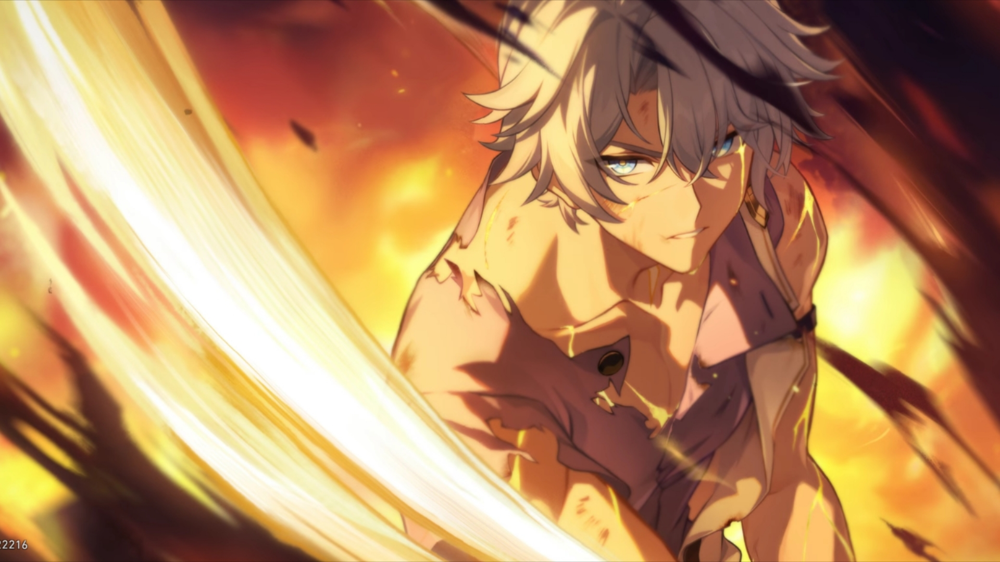
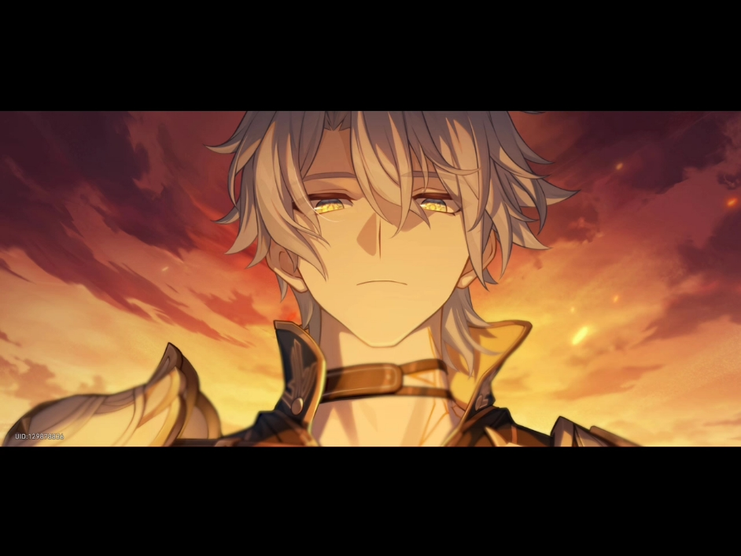
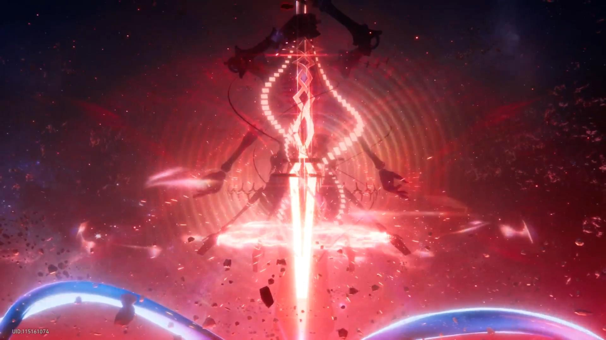

翁法罗斯，是一个真正有着以万年为单位的英雄史诗的世界。在如黄金般的盛世，人类与众神无忧无虑的共存着。直到一天，黑色的死潮带着超乎常理的恐怖倾斜而至，吞噬了视野中的一切生命。白厄挥剑斩杀被黑潮创造的怪物，却听到那怪物在哭嚎：白厄，我们难道不是朋友吗？原来，白厄方才拼尽全力杀死的，都是自己熟悉的人们，他们变成了扭曲的怪物。

逐火，是不断失却的旅途。而在这场苦旅中，生命也微不足惜。白厄作为一张白纸，毫无保留的承载起所有人的愿望。在第三百五十六次轮回中，他亲手杀死了自己的老师（承载理性火种的半神-阿那克萨戈拉斯）与领袖（浪漫火种的阿格莱雅）。第十万次轮回，他已记不清多少次亲手杀死了自己的挚友，多少次把名为“侵晨”的巨剑刺入他的胸膛（纷争半神-阿德漠斯）。第一百二十万次轮回，他早已记不清这是圣女（天空的半神-雅辛忒斯）第几次坠落悬崖。第两千两百万次轮回，多洛斯的偷儿，浪荡的羁客（诡计半神-赛法利亚）诘问他是：让我的家乡落入火海的恶魔，竟然妄想成为英雄？第两千五百万次轮回，冥河的女儿，灰黯之手的侍者，死亡的半神（波吕刻斯）一如既往挡在他的面前，不愿看到他于歧路上彻底迷失，卡厄斯兰娜挥动大剑，剖开了巨龙（波吕刻斯的神明化身）的腰腹，剜出了火种。第三千三百五十五万第三百三十六次轮回，他的体内已经容纳了四亿枚火种。

最后一次轮回中，卡厄斯终于等到了，每一次轮回中童年心中的那道虚影，心目中的英雄（主角=玩家）。每位黄金裔都有神谕（它昭示着黄金裔的使命与终点），“汝将肩负骄阳，直至灰白的黎明显著”。在最后一次轮回中，他将所有的希望与烬世金血（白厄拼尽全力打伤了宇宙中至高的存在-星神）交给了主角和其他同伴，自己化作牢笼，孤独的囚禁着”毁灭的巨匠“-铁墓（它因星神间的对弈而诞生），他深知，如果铁墓的”身“降临于世，寰宇生命将会被彻底抹消。在最后，我们亲手击碎了早已破碎不堪的白厄，在宇宙中无数生命的帮助下，我们战胜了铁墓。
